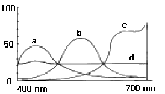
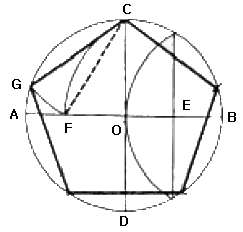

시각디자인산업기사 (2005-03-06 기출문제)
1과목: 색채학
1. 먼셀 표색계에 관한 설명 중 바른 것은?
- 5가지 주요색상은 R, O, G, B, P이다.
- 채도 단위는 0 ~ 10까지 이다.
- 색채의 표기법은 H(색상),C(채도)/V(명도) 이다.
- 무채색은 명도단위 앞에 N을 붙여 사용한다.
(정답률: 알수없음)

2. 다음 중 색광혼합에 관한 설명으로 맞는 것은?
- 혼합할수록 명도, 채도가 낮아진다.
- 3원색은 자주(M), 황(Y), 청(C)이다.
- 3원색을 모두 혼합하면 흑색이 된다.
- 일명 가산혼합이라고도 한다.
(정답률: 알수없음)
3. 다음 중 유사색상 배색의 느낌이 아닌 것은?
- 화합적임
- 평화적임
- 안정됨
- 자극적임
(정답률: 알수없음)
4. 무채색의 설명 중 올바른 것은?
- 밝고 어두움만을 나타내며 색상과 채도가 없다.
- 무채색의 명도는 1∼14단계로 되어 있다.
- 밝은 쪽을 저명도, 어두운 쪽을 고명도라 한다.
- 검정색과 같이 흰색도 따뜻한 색에 속한다.
(정답률: 알수없음)
5. 식욕의 소구력이 가장 강한 색은?
- 녹색
- 파랑
- 주황
- 보라
(정답률: 알수없음)
6. 색채심리에 관한 설명 중 틀린 것은?
- 색채의 중량감은 주로 그 채도에 의해 좌우된다.
- 난색은 흥분색, 한색은 진정색이다.
- 대체로 난색계는 친근감을, 한색계는 소원감을 준다.
- 두 가지 색이 인접하여 있을 때, 서로 영향을 주어 그 차이가 강조되어 보이는 것이 색채대비 효과이다.
(정답률: 알수없음)
7. 원색(原色)에 대한 다음 설명 중 잘못된 것은?
- 색료의 3원색은 자주(magenta), 노랑(yellow), 청록(cyan)이다.
- 원색을 혼합해서 다른 모든 색상을 만들 수 있으나 반대로 다른 색상을 혼합해서는 원색을 만들 수 없다.
- 헤링(Hering)은 4원색설을 주장하였다.
- 색광의 3원색은 빨강(red), 노랑(yellow), 청록(cyan)이다.
(정답률: 알수없음)
8. 색의 경연감과 흥분 진정에 관한 설명 중 잘못된 것은?
- 고명도, 저채도 색이 부드러운 느낌을 준다.
- 난색계, 고채도 색은 흥분색이다.
- 라이트(light)색조는 부드러운 느낌을 준다.
- 한색보다 난색이 딱딱한 느낌을 준다.
(정답률: 알수없음)
9. 우리나라에서 한국산업규격으로 채택하고 있는 색채표기법은?
- 먼셀표기법
- 오스트발트표기법
- CIE표기법
- 토머스영과 헬름홀츠 표기법
(정답률: 알수없음)
10. 색의 3 속성에 따라 3차원적인 공간에다 계통적으로 배열한 것은?
- 색상환
- 채도척
- 명도척
- 색입체
(정답률: 알수없음)
11. 색채 조절에 있어서 우선 고려해야 할 사항으로 가장 적합한 것은?
- 감각, 쾌적성, 안정성, 능률성
- 팽창, 상징성, 우월성, 친근감
- 잔상, 대비, 긴장감, 부드러움
- 진출, 수축, 한난의 감정
(정답률: 알수없음)
12. 동일색상의 경우, 큰 면적의 색은 작은 면적의 색 견본을 보는 것보다 화려하고 박력이 가해진 인상으로 보이는 것을 무엇이라고 하는가?
- 소면적 제 3색각 이상
- 게스탈트의 해석
- 매스 효과
- 반전 대비
(정답률: 알수없음)
13. 유사색상 배색의 특징은?
- 동적이다.
- 자극적인 효과를 준다.
- 원만하며 부드럽다.
- 대비가 강하다.
(정답률: 알수없음)
14. 색채의 지각현상 중 면적효과에 관한 설명으로 올바른 것은?
- 같은 색이라도 면적이 커지면 명도와 채도가 낮게 보이는 것
- 같은 색이라도 면적이 커지면 명도와 채도가 높게 보이는 것
- 같은 색이라도 면적이 커지면 명도는 높아지나, 채도가 낮게 보이는 것
- 같은 색이라도 면적이 커지면 명도는 낮아지나, 채도가 높게 보이는 것
(정답률: 알수없음)
15. 컬러 TV의 화면이나 인상파 화가의 점묘법, 직물 등에서 발견되는 색의 혼색방법은?
- 동시가법혼색
- 계시가법혼색
- 병치가법혼색
- 감법혼색
(정답률: 알수없음)
16. 다음 반사율의 곡선을 나타낸 그래프 중 무채색에 가장 가까운 파장을 나타내는 것은?

- a
- b
- c
- d
(정답률: 알수없음)
17. 오스트발트의 색상환을 구성하는 4가지 기본색은 무엇을 근거로 한 것인가?
- 헤링(Hering)의 반대색설
- 뉴톤(Newton)의 광학이론
- 영·헬름홀쯔(Young-Helmholtz)의 색각이론
- 맥스웰(Maxwell)의 회전색 원판 혼합이론
(정답률: 알수없음)
18. 먼셀(Munsell)표색계에 있어서, 색입체를 수평으로 자르면 어떤 면이 나타나는가?
- 동일채도와 색상면
- 동일 명도면
- 2개의 보색 색상면
- 무채색 단계면
(정답률: 알수없음)
19. 문·스펜서(Moon.Spence)의 색채조화론에서 조화의 경우가 아닌 것은?
- 동등 조화(identity)
- 유사 조화(similarity)
- 대비 조화(contrast)
- 통일 조화(unity)
(정답률: 알수없음)
20. 다음 색 중에서 식욕을 가장 감퇴시키는 효과가 있는 색은?
- 빨강색
- 노란색
- 갈색
- 파란색
(정답률: 알수없음)
2과목: 인쇄 및 사진기법
21. 두개 이상의 빛이 서로 만나서 진폭이 극대가 되면 그 합성광을 받는 면에서는 명암의 변화가 일어나는데 이러한 현상을 무엇이라 하는가?
- 편광
- 간섭
- 조절
- 분산
(정답률: 알수없음)
22. 문자의 크기는 포인트 또는 급수로 나타내는데 다음 중 가장 큰 문자는?
- 7포인트
- 10포인트
- 13급
- 8급
(정답률: 알수없음)
23. 피사계 심도를 깊게 하려면 어떻게 해야 하는가?
- 낮은 조리개 값으로 근접하여 촬영한다.
- 높은 조리개값으로 멀리서 촬영한다.
- 초망원렌즈로 촬영한다.
- 마이크로렌즈로 낮은 조리개값을 이용하여 촬영한다.
(정답률: 알수없음)
24. 원지 표면에 백토, 황산바륨 등의 안료를 카세인, 전분 등에 혼합하여 칠하고, 건조시킨 다음 슈퍼캘린더기로 광택처리한 인쇄용지는?
- 머신코트지
- 합성지
- 아트지
- 상질지
(정답률: 알수없음)
25. 감광재료의 수세 효과에 영향을 주는 요인과 가장 거리가 먼 것은?
- 현상액의 종류
- 정착액의 종류
- 수세시간과 온도
- 수세수의 수질과 pH
(정답률: 알수없음)
26. 표면반사를 이용하여 포토제닉한 대상으로 표현해야 할 광고 사진과 가장 거리가 먼 것은?
- 커피잔
- 술병
- 쥬스병
- 바나나
(정답률: 알수없음)
27. 유기 용제의 특성에 의한 환경 오염이 적고, 냄새도 없는 잉크로서 식품 포장재의 인쇄에 적합한 잉크는?
- 수성 잉크
- 도전성 잉크
- 전자선 경화 잉크
- 그라비어 잉크
(정답률: 알수없음)
28. 컬러사진에서 감광재료에 사용되는 색소를 형성할 수 있는 물질은?
- 할로겐화은(AgX)
- 젤라틴(gelatin)
- 커플러(coupler)
- 현상제(developer)
(정답률: 알수없음)
29. 카메라 조리개의 역할에 있어서 해당되지 않는 것은?
- 빛의 량을 조절한다.
- 심도의 깊이를 조정한다.
- 선명도를 지배한다.
- 색온도를 조절한다.
(정답률: 알수없음)
30. 만일 조리개 8에서 1/500초가 적정 노출이라면 조리개 11에서의 적정 노출은?
- 1/500 초
- 1/250 초
- 1/120 초
- 1/60 초
(정답률: 알수없음)
31. 현상 주약의 산화를 방지하고 현상액이 오래 가도록 하는 보항제는?
- 탄산나트륨
- 브롬화칼륨
- 아황산나트륨
- 아세트산
(정답률: 알수없음)
32. 가열한 금속판으로 강한 압력을 주어 화선을 만드는 방법으로 다른 눌러박기들과 병용하여 인쇄물을 한층 더 아름답게 만드는 방법은?
- 민박기
- 색박박기
- 금속박박기
- 잉크박기
(정답률: 46%)
33. 필름의 현상, 정착, 수세가 끝난 후 건조 과정에서 사용되는 수적방지제(wetting-agent)는?
- 포토플로
- 포토키나
- 포토그램
- 포타
(정답률: 알수없음)
34. 확대용 인화지(클로로브로마이드지)에 사용되는 할로겐화은 유제로 가장 적합한 것은?
- AgF . AgCl
- AgI . AgCl
- AgBr . AgI
- AgBr . AgCl
(정답률: 알수없음)
35. 일반적으로 가장 많이 사용하는 35mm 필름의 화면 크기는?
- 2.4×3.6 cm
- 2.4×1.8 cm
- 6×6 cm
- 6×7 cm
(정답률: 알수없음)
36. 현상주약에 해당되는 약품은?
- 탄산나트륨
- 브롬화칼륨
- 하이드로퀴논
- 아황산나트륨
(정답률: 알수없음)
37. 볼록판을 판면으로하여 축임물을 사용하지 않고 오프셋방식으로 인쇄하는 판은?
- 난백판
- PS판
- 다층평판
- 드라이 오프셋판
(정답률: 알수없음)
38. 촬영 요건과 관련이 가장 적은 것은?
- 광원
- 피사체
- 감광재료
- 삼각대
(정답률: 알수없음)
39. 특수한 인화기법 중에서 현상 중의 필름에 적당한 빛을 쬐어, 한 장의 화면에 음화와 양화가 함께 나타나게 하는 효과를 얻을 수 있는 기법은?
- 디포메이션
- 솔라리제이션
- 더블 프린트
- 포토 몽타즈
(정답률: 알수없음)
40. 어두운 장소에서 섬광광원을 이용하여 인물사진을 찍으면 눈의 동공이 빨갛게 나타나는 현상을 무엇이라고 하는가?
- 적외선 회절현상
- 적목 현상
- 색반사 현상
- 고스트 현상
(정답률: 알수없음)
3과목: 시각디자인론
41. 1과 3의 숫자가 13또는 비(B)처럼 보여지는 지각심리법칙은?
- 유사성
- 접근성
- 연속성
- 폐쇄성
(정답률: 알수없음)
42. 바우하우스가 소재한 도시(제1기 - 제2기)로 맞는 것은?
- 베르린 - 슈트가르트
- 뎃사우 - 파리
- 바이마르 - 뎃사우
- 바이마르 - 함부르크
(정답률: 알수없음)
43. 의자를 디자인할 때 가장 우선적으로 고려해야 할 사항은?
- 미적 가치
- 장식성
- 실용성
- 창조성
(정답률: 알수없음)
44. 독일공작연맹에 대한 설명으로 옳지 않은 것은?
- 기계생산의 전면부정과 수공예로의 복귀 주장
- 규격화에 의한 상품의 양질화가 목표
- 헤르만무테지우스에 의해 1907년에 결성됨
- D.W.B를 약칭으로 함
(정답률: 알수없음)
45. 산업디자인에 관해 적절하게 표현한 것은?
- 실용적일 수 있도록 기능적인 면만을 최대한 고려하는 과학적이고 논리적인 행위이다.
- 만들려고 하는 목적물을 계획하고 그 이미지를 구체적으로 실현하려고 하는 행위이다.
- 아름다움만을 추구하는 미적 조형 활동이다.
- 기존의 방법을 수정 개선하여 모방하는 활동이다.
(정답률: 알수없음)
46. 의뢰자가 디자이너에게 일정금액으로 디자인 계약을 하는 경우를 무엇이라 하는가?
- 시간적 요금제도
- 사용료 제도
- 일정요금 제도
- 계약요금 제도
(정답률: 알수없음)
47. 디자인의 요소 중 점에 대한 설명으로 부적합한 것은?
- 기하학상의 점은 눈에 보이지 않는 존재이기 때문에 비물질적인 존재로 정의할 수 있다.
- 상징적인 면에 있어서의 점은 모든 조형예술의 최초의 요소로 규정지을 수 있다.
- 점의 특징은 크기가 아니고 형(形)에 있다.
- 점은 공간내의 조형활동에서 시동(始動),교차(交叉), 정지(停止) 등 여러 가지 표정을 지니는 것이다.
(정답률: 알수없음)
48. 한국산업규격(KS)의 제도통칙에 의거하여 우리나라에서 사용하는 투상법은?
- 제1각법
- 제2각법
- 제3각법
- 제4각법
(정답률: 알수없음)
49. 정원에 내접하는 정5각형 그리기의 설명 중 잘못된 것은?

- EC = EF
- CF = CG
- EO = OF
- AB = CD
(정답률: 알수없음)
50. 수정궁(Crystal palace)과 관계있는 박람회는?
- 필라델피아 백년제
- 파리 대박람회
- 세계 만국박람회
- 영국의 대산업 박람회
(정답률: 알수없음)
51. 환경친화 디자인을 위한 가장 기본적인 가이드 라인을 제안한 것 중 틀린 것은?
- 적은 부품의 사용과 생산과정을 줄인다.
- 재료를 최소화 하며, 복합소재를 피한다.
- 적은 부피로 하며, 무게를 줄인다.
- 제작비를 감소하며, 단순화를 시도한다.
(정답률: 알수없음)
52. 미술공예운동(Art and Crafts Movement)과 거리가 먼 내용은?
- 19세기 후반 영국에서 일어났으며 월리엄 모리스가 중심이었다.
- 아르누보와 근대 디자인운동에 큰 영향을 미쳤다.
- 산업혁명 결과에 대응한 수공예 부흥운동이었다.
- 대중을 위한 미술운동으로서 보다 나은 공예품을 만들었다.
(정답률: 알수없음)
53. 전통적인 장식미술에서 독자 양식을 추구하는 인간과 장식과의 깊은 인연을 암시하는, 1920 ~ 1930년대 프랑스에서 발생한 동향은?
- 모더니즘
- 트리엔 날레
- 아르누보
- 아르데코
(정답률: 알수없음)
54. 반복(reprtition), 방사(radiation), 점이(gradation) 등이 속하는 디자인 원리는?
- 리듬
- 균형
- 조화
- 강조
(정답률: 알수없음)
55. 아르누보의 조형적 특징은?
- 기하학적 단순미
- 로코코 양식의 복고풍
- 곡선, 동적인 식물 문양
- 추상형태
(정답률: 알수없음)
56. 질감은 촉각적 질감(tactile texture)과 시각적 질감(Visual texture)으로 나눈다. 시각적 질감의 표현이 아닌 것은?
- 장식적 질감
- 자연적 질감
- 기계적 질감
- 유기적 질감
(정답률: 알수없음)
57. 바우 하우스(Bauhaus)의 설립자는?
- 존 러스킨(John Ruskin)
- 윌리암 모리스(William Morris)
- 헨리 반데벨데(Henry van de Velde)
- 월터 그로피우스(Walter Gropius)
(정답률: 알수없음)
58. 기업의 실체를 관계자 집단에서 인식, 식별하도록 하는 경영 정책의 일환으로 기업의 이미지를 시각적 특징으로 규정하고자 하는 것은?
- PR(Public Relation)
- 기업광고(Business Advertising)
- CI(Corporate Identity)
- 로고 시스템(Logo system)
(정답률: 알수없음)
59. 다음 중 디자인의 조건으로 적합하지 않은 것은?
- 가독성
- 독창성
- 심미성
- 합목적성
(정답률: 알수없음)
60. 해칭을 하는 방법으로 틀린 것은?
- 도면이나 재질을 고려하지 않을 때에는 모두 가는 실선으로 그린다.
- 2개 이상의 부품이 인접해 있을 때에는 해칭 방향 또는 간격을 다르게 한다.
- 해칭을 간편하게 할 때는 외형선으로 표시해도 된다.
- 중심선 또는 주요 외형선에 대하여 45°의 경사로서 등간격으로 긋는다.
(정답률: 알수없음)
4과목: 시각디자인실무 이론
61. 여러 세분 시장에서 제품, 유통, 판촉 등이 서로 다른 제품과 서비스를 제공함으로써 시장별로 높은 매출과 점유를 달성하려는 전략은?
- 상품화 및 점검 집중화 마케팅
- 표준화 마케팅
- 동질화 마케팅
- 차별화 마케팅
(정답률: 알수없음)
62. 다음 중 "파노라마 광고"에 속하는 것은?
- 와이드 컬러 광고
- TV 광고
- 애드벌룬 광고
- 모빌광고
(정답률: 알수없음)
63. 브레인스토밍법(Brainstorming)을 개발한 사람은?
- 폴 발레리(Paul Valery)
- 알렉스 오스본(Alex Osborn)
- 빌 게이츠(Bill Gates)
- 윌리엄 고든(William Gordon)
(정답률: 알수없음)
64. 다음 커뮤니케이션 방법 중 논 버벌 커뮤니케이션(Non Verbal Communication)에 해당되는 것은?
- 캐치 프레이즈 (catch phrase)
- 픽토그램 (pictogram)
- 나레이션 (narration)
- 슬로건 (slogan)
(정답률: 알수없음)
65. 행간(interlinear spacing)에 대한 설명 중 올바른 것은?
- 미적인 기능은 고려하지 않는 것이 좋다.
- 넓을수록 좋다.
- 글씨 뿐 아니라 위 아래의 공간도 함께 고려되어야 한다.
- 여러 가지 글자가 같이 쓰이더라도 행간은 모두 동일한 것이 좋다.
(정답률: 알수없음)
66. 포장디자인에 있어 색채는 최종적으로 소비자를 직접 대상으로 하기 때문에 구매심리에 큰 영향을 준다. 다음 중 포장 디자인의 색채 역할을 잘못 설명한 것은?
- 고객의 주의를 끌며 내용 상품의 특징을 대변한다.
- 기호적인 인상을 주며 시각적인 흥미를 조장한다.
- 사람의 감정을 자극하지만 세일즈 포인트의 효과는 없다.
- 판매를 증진시키고 상품의 회전을 빨리한다.
(정답률: 알수없음)
67. 개념적인 어떤 것을 비합리적, 비논리적인 복합적 차원의 형태로 시각화하며 표현한 것은?
- 추상적 일러스트레이션
- 반구상적 일러스트레이션
- 초현실적 일러스트레이션
- 앙포르멜적 일러스트레이션
(정답률: 알수없음)
68. 기업의 제품개발, 광고전개, 유통설계를 중심으로한 활동이 마케팅이다. 이것은 긍극적으로 무엇을 위한 것인가?
- 사회적 이해 증진
- 이윤추구
- 소비자 교육
- 문화생활보급
(정답률: 알수없음)
69. 다음 중 C.I.의 응용편에 비교적 포함되지 않는 것은?
- 표지 및 간판
- 유니폼
- 마스코트
- 수송물 및 건물
(정답률: 알수없음)
70. POP 광고를 점두에 설치하고자 할 때 가장 적절한 것은?
- 깃발, 현수막, 휘장
- 샘플 케이스
- 가격표, 모빌, 안내판
- 견본진열대
(정답률: 55%)
71. 한 장짜리 지면을 2 ~ 3겹으로 접은 소형 광고물은?
- 소책자(booklet)
- 엽서(card)
- 세일즈 레터(sales letter)
- 홀더(folder)
(정답률: 알수없음)
72. 주로 인물을 소재로 하여 익살, 유머, 풍자 등의 효과를 살려 그린 그림은?
- 카툰
- 캐리커쳐
- 캐릭터
- 컷
(정답률: 알수없음)
73. 기호화된 광고메시지를 개인이나 집단에게 송신, 전달하는 수단을 무엇이라 하는가?
- 광고매체
- 광고기획
- 광고제작
- 광고집행
(정답률: 알수없음)
74. 수시로 변화하고 있는 마케팅 환경과 가장 거리가 먼 것은?
- 기업환경의 변화
- 회계구조의 변화
- 경제환경의 변화
- 가치관의 변화
(정답률: 알수없음)
75. 호주의 블리스(C.K.Bliss)가 발명한 것으로 블리스 심볼릭스(Blissymbolics)라고도 불리우는 국제적인 그림문자 시스템은?
- 아이소타입(Isotype)
- 시멘토 그래피(Semento Graphy)
- 포노 그램(Phonogram)
- 픽토 그램(Pictogram)
(정답률: 알수없음)
76. 인쇄매체 광고의 구성요소 중 조형적 요소가 아닌 것은?
- 일러스트레이션
- 로고타입
- 보더라인
- 헤드라인
(정답률: 알수없음)
77. 마케팅 믹스(Marketing Mix)의 4대 구성요소 (4P's)가 아닌 것은?
- 제품(product)
- 가격(price)
- 영향력(power)
- 유통(place)
(정답률: 알수없음)
78. 신문광고에 있어서 보더라인의 역할로 거리가 먼 것은?
- 독자의 시선을 묶는 역할
- 시각구성을 이성적으로 하는 역할
- 광고의 성격을 보완하는 역할
- 타 광고와 구별을 하는 역할
(정답률: 알수없음)
79. 시장 세분화를 위한 조사로 인구 통계학적인 요인이 아닌 것은?
- 연령, 성별
- 지역, 인구밀도
- 직업, 소득
- 교육수준, 가족규모
(정답률: 알수없음)
80. 다음 중 제품 포장의 기능이 아닌 것은?
- 제품보호기능
- 판매촉진기능
- 운반편리기능
- 제품은폐기능
(정답률: 알수없음)
해설: 먼셀 표색계에서는 색상을 R(빨강), O(주황), G(녹색), B(파랑), P(보라)로 구분하며, 채도는 0부터 10까지의 단위로 나타낸다. 명도는 0부터 10까지의 단위로 나타내며, 무채색은 명도단위 앞에 N을 붙여 사용한다. 따라서 "무채색은 명도단위 앞에 N을 붙여 사용한다."가 바른 설명이다.